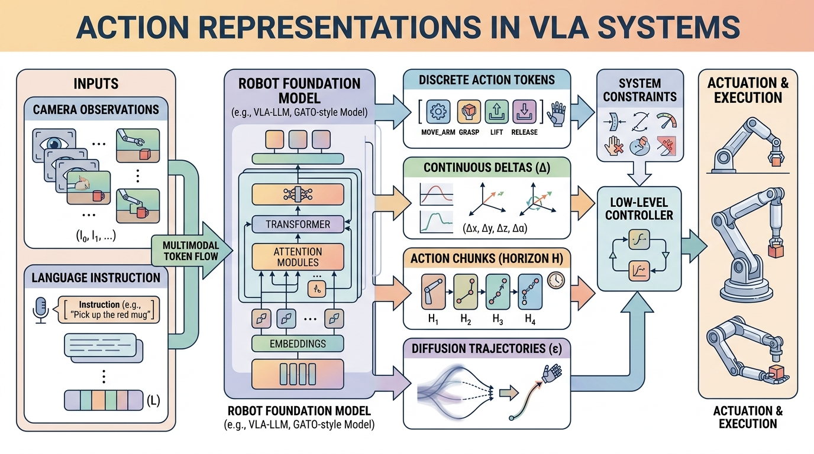

"Every action representation is a promise about what kinds of motion your policy can even imagine."
A Motion-Interface Designer

This section assumes familiarity with action chunking from section 22.2 and diffusion and flow-matching policy heads from sections 22.4 and 22.5. The autoregressive backbone perspective introduced in section 34.5 is also directly relevant to how discrete token representations are evaluated here. The action-interface trade-offs developed in this section carry forward into Chapter 35, where the same representations must remain coherent across changes in robot body and sensor configuration.
A robot hand reaching for a cup pauses, overshoots, and knocks it over. The policy was well-trained, but the action representation could not express the precise wrist flick the task demanded. Right now, as VLAs move from lab demos to real deployments, choosing how to encode actions has become the hidden bottleneck: get it wrong and no amount of additional training data fixes the ceiling you just built in. This section shows how discrete tokens, continuous chunks, diffusion heads, and hierarchical skills each carve up the space of possible motions differently, why that choice determines which failures you will debug at 2 a.m., and how to pick deliberately rather than by fashion.
The Design Question
An action head has to compress a continuous physical process into a model-friendly interface. The main trade-off is between compact discrete structure and faithful motor detail, and this choice is called the representation ceiling problem: once the action space is fixed, no training data can recover information the encoding discarded. If you discretize too aggressively, small but important control variations vanish. If you stay fully continuous, inference can become slower or harder to align with autoregressive backbones.
On a physical robot, the ceiling is not abstract. A gripper closing at the wrong force by even a few percent slips a cable or crushes a component. If the encoding cannot express that force range, the controller never receives the signal, and retraining only refines which wrong value the policy predicts with highest confidence. The ceiling determines the floor of your failure rate.
Mechanically, the ceiling forms at the quantization or compression step. A Discrete Cosine Transform (DCT)-based tokenizer, for instance, projects a joint trajectory onto a fixed set of frequency basis functions and assigns each coefficient to a discrete bin. Variation finer than one bin width is rounded away before the model ever sees it. More demonstrations cannot restore rounded-off variation because the same quantizer is applied at inference time, so the output space is bounded by the bin resolution regardless of policy capacity.
The field currently uses four broad strategies: per-step discrete tokens, compressed action tokens such as FAST and FAST+, direct continuous chunks, and generative continuous heads such as diffusion or flow matching. The right answer depends on control rate, action smoothness, and how multi-modal the task is.
Students often assume that collecting more demonstration data can compensate for a coarse or poorly chosen action representation. This is incorrect in embodied AI systems: the quantization or compression step that defines the representation is applied both at training time and at inference time, so any motion variation finer than the encoding resolution is discarded before the model ever processes it and cannot be reconstructed at deployment. No amount of additional data restores information that the representation has structurally thrown away. The correct mental model is to treat the action representation as a hard ceiling set before training begins: choose the resolution and structure of that ceiling deliberately for the target task, because the policy can only approach it, never exceed it.
Think of the action representation as a sieve you place over a mixing bowl before any flour goes in. Once you have pressed dough through a coarse mesh, the fine particles that fell through are gone permanently: baking longer, at higher heat, or with better technique cannot reconstitute what the sieve discarded. In the same way, a coarse quantizer or a low-resolution DCT basis throws away fine motor variation before training starts, and every gradient update afterward only refines what passed through the mesh, never what was lost.
Token models usually fail through aliasing and sequence length. Continuous heads usually fail through latency, calibration sensitivity, or weaker integration with language-model-style decoders.
A Compact Comparison Formula
A practical comparison uses both fidelity and runtime:
$$J = \alpha \cdot \text{task\_success} - \beta \cdot \text{latency} - \gamma \cdot \text{reconstruction\_error}.$$
The coefficients depend on the application. A dexterous high-rate hand may tolerate more model complexity to reduce reconstruction error. A mobile manipulator with strict runtime bounds may prefer a simpler but faster interface. The right balance also depends on how the action head integrates with the downstream controller.
Code Fragment 1 contrasts a naive token budget with a chunked representation.
# Compare how many model outputs are needed for the same 1-second control horizon.
control_hz = 20
horizon_s = 1.0
timesteps = int(control_hz * horizon_s)
naive_tokens_per_step = 7
chunk_length = 5
chunk_outputs = timesteps // chunk_length
print(f"naive_token_predictions={timesteps * naive_tokens_per_step}")
print(f"chunk_predictions={chunk_outputs}")
naive_token_predictions=140 chunk_predictions=4
OpenVLA, openpi, and LeRobot toolchains let you swap among discrete-token, chunked, and continuous policy heads without rebuilding the entire training stack. That maintained abstraction matters once the action-interface trade-offs are understood well enough to choose a head deliberately.
When Each Representation Wins
| Representation | Best when | Main risk |
|---|---|---|
| Naive discrete tokens | Low-rate commands or simple proof-of-concept setups | Long sequences and quantization error |
| FAST or FAST+ tokens | Smooth high-rate actions with autoregressive backbones | Tokenizer mismatch across embodiments |
| Continuous chunks | Short-horizon manipulation with explicit controllers | Chunk boundaries can hide mid-course correction needs |
| Diffusion or flow heads | Multi-modal continuous trajectories and dexterous behaviors | Sampling cost and runtime complexity |
| Hierarchical skills | Long-horizon tasks with reusable motion motifs | Low-level nuance may be hidden behind the skill interface |
Algorithm: VLA Action Representation Selection
Input: control frequency $f$ (Hz), action dimensionality $d$, task multi-modality flag $m \in \{0,1\}$, latency budget $L$ (ms), available demonstration count $N$
Output: selected representation $\hat{r}$ and objective coefficient triple $(\alpha, \beta, \gamma)$ for $J = \alpha \cdot \text{task\_success} - \beta \cdot \text{latency} - \gamma \cdot \text{reconstruction\_error}$
- Compute the raw token budget for a 1-second horizon: $T_{\text{raw}} = f \times d$. If $T_{\text{raw}} > 100$, mark discrete-only routes as high-risk due to sequence length.
- Check latency headroom: if $L < 20$ ms, eliminate diffusion heads with denoising steps $k > 25$, because sampling cost $\approx k \times t_{\text{step}}$ exceeds the budget.
- If $m = 1$ (multi-modal action distribution, e.g. two valid grasp orientations), retain diffusion or flow-matching heads; set $\alpha \leftarrow 0.6$, $\beta \leftarrow 0.2$, $\gamma \leftarrow 0.2$.
- If the backbone is autoregressive (transformer with causal masking), prefer tokenized representations; evaluate FAST or FAST+ by fitting the tokenizer on $N$ demonstrations and measuring round-trip reconstruction error $\epsilon$ per joint.
- If $\epsilon > \delta_{\text{deadband}}$ (the robot's position-control deadband), re-fit DCT bin boundaries: $\texttt{fast\_tokenizer.fit(demos, n\_bins=256)}$ and repeat step 4.
- For tasks with $f \leq 10$ Hz and nearly deterministic action choices, prefer continuous chunks of length $c = \lfloor f \times 0.25 \rfloor$; set $\alpha \leftarrow 0.5$, $\beta \leftarrow 0.3$, $\gamma \leftarrow 0.2$.
- For long-horizon tasks with reusable motion motifs, evaluate a hierarchical skill interface: define high-level policy $\pi_H$ with skill vocabulary $\mathcal{S}$ and low-level policy $\pi_L(\theta_L)$ conditioned on the selected skill $s \in \mathcal{S}$.
- Score each remaining candidate $r_i$ using the objective $J(r_i)$ on a held-out validation set; break ties by latency.
- Select $\hat{r} = \arg\max_{r_i} J(r_i)$ and record the winning $(\alpha, \beta, \gamma)$ for the deployment log.
- Before deployment, run the inverse transform check: apply $\hat{r}^{-1}$ to reference trajectories from the target embodiment and confirm mean absolute error per joint is below $\delta_{\text{deadband}}$.
Diffusion and flow heads are not automatically superior. If your robot runs at low frequency with nearly deterministic action choices, a simpler chunked or tokenized interface may be easier to deploy and debug.
Consider a 50 Hz dexterous hand task where the policy must respond within 20 ms per cycle. A diffusion head using 100 denoising steps at even 0.1 ms per step adds 10 ms of sampling overhead before the action is available, leaving almost no margin for inference on the vision-language backbone. Teams using pi-zero on bimanual tasks have addressed this by capping denoising steps at 10 to 25 and accepting slightly noisier trajectories. A separate failure mode appears with FAST tokenizers trained on one embodiment: the discrete codebook bins actions according to the velocity and position ranges seen during training. When the same tokenizer is applied to a robot with a different wrist range of motion, the bins cluster near the center of the new robot's workspace and the model systematically underestimates large wrist rotations, producing clipped or stalled motion that is hard to diagnose without inspecting the tokenizer's inverse transform.
When transferring a FAST or FAST+ tokenizer to a new robot, run the tokenizer's inverse_transform on a held-out set of reference trajectories from the target embodiment before any policy training. If the round-trip reconstruction error (mean absolute error per joint) exceeds the robot's position-control deadband, re-fit the tokenizer's DCT bin boundaries on at least 500 target-embodiment demonstrations using fast_tokenizer.fit(target_demos, n_bins=256). Skipping this check is the single most common cause of silently clipped wrist motion, because the policy loss never signals the problem directly.
A Franka Panda arm opening a drawer at 10 Hz with a Cartesian impedance controller benefits from chunked continuous actions with chunk length 2 to 3 (covering 200 to 300 ms of horizon): the impedance controller absorbs small positional errors between chunks, so reconstruction precision of roughly 2 mm is sufficient and latency stays well under 20 ms per cycle. A Shadow Dexterous Hand or Allegro Hand manipulating cables at 50 Hz presents the opposite profile: individual fingertip displacements of 1 to 2 mm determine whether the cable is routed or dropped, the joint space has 16 to 22 degrees of freedom, and a raw token budget of $50 \times 22 = 1100$ per second makes naive discrete tokenization impractical. Teams training on Open X-Embodiment dexterous subsets have found that either a FAST+ tokenizer re-fit on at least 500 target-embodiment demonstrations or a flow-matching head capped at 25 denoising steps is needed to keep per-joint reconstruction error below the 0.5-degree position deadband typical of these hands. Skipping the re-fit and reusing a tokenizer trained on Franka data causes systematic underestimation of finger splay, which shows up as cables slipping rather than a clearly logged prediction error.
Choosing an action representation is like choosing whether to speak to the robot in syllables, full sentences, or dance notation. Every choice drops something and gains something.
Your robot runs at 50 Hz and needs smooth wrist motion. Which representation class would you rule out first, and why would its failure show up as a runtime or reconstruction problem?
Unified tokenizer-head co-design. Rather than treating tokenization and the policy head as independent choices, 2024-2025 work has begun optimizing them jointly. The FAST+ tokenizer (Pertsch et al., 2025, Physical Intelligence) demonstrated that DCT bin boundaries fitted on target-embodiment data reduce reconstruction error by roughly half compared to generic bins; follow-on work from the Berkeley Robot Learning Lab is exploring learned vector-quantized codebooks that are jointly trained with the transformer backbone so the codebook adapts to the distribution of tasks, not just trajectories.
Flow-matching with adaptive denoising budgets. Physical Intelligence's pi-zero-fast line and concurrent work at CMU's Robotics Institute show that diffusion-style heads can hit sub-20 ms latency if the number of denoising steps is made input-dependent (more steps for visually ambiguous scenes, fewer for routine motion). This direction is active and contested: some groups argue consistency models are a cleaner path to variable-step inference than adaptive schedulers.
Cross-embodiment action interfaces. The 2024 Octo model (Open X-Embodiment Collaboration, Berkeley) showed that a single flow head with embodiment-conditioning vectors can generalize across robot morphologies, but action-space coverage remains uneven: fine-fingered manipulation is underrepresented in current datasets. The RoboVerse and DROID datasets released in 2024-2025 are being used to probe how far cross-embodiment action heads can be pushed before per-robot fine-tuning becomes mandatory.
Open problem for PhD students. No rigorous theoretical framework yet predicts when a shared tokenizer will transfer across embodiments versus when per-robot re-fitting is necessary. A tractable project would be to characterize the conditions (joint-range overlap, control-rate ratio, task distribution shift) under which a fixed FAST-style tokenizer's reconstruction error crosses the deadband threshold on a held-out target embodiment, using the Open X-Embodiment suite as a benchmark. This would give practitioners a principled stopping rule rather than the current heuristic of "re-fit on 500 demonstrations."
Action representation is not a small implementation detail. It is the part of the VLA that decides how motor intelligence is packaged, how latency accumulates, and which classes of motion error become likely.
Project Ideas
Beginner (weekend): Use LeRobot with a Gymnasium reaching environment to train two policies side by side, one using discrete action tokens and one using continuous chunks, then plot the per-step reconstruction error for each. The key challenge is wiring LeRobot's policy-head swap API so both runs share the same replay buffer and evaluation loop without accidentally leaking configuration differences into the results.
Intermediate (1-2 weeks): Implement a FAST-style DCT action tokenizer in PyBullet or MuJoCo for a 7-DOF arm pick-and-place task, train an autoregressive policy head on top of it, then systematically vary the number of DCT bins (32, 64, 128, 256) and measure how task success rate and wrist reconstruction error change at each resolution. The key challenge is fitting separate tokenizers per bin count without letting velocity-range differences between the tokenizer training split and the evaluation split silently inflate the apparent reconstruction error.
Intermediate-plus (2 weeks): Build a ROS 2 node that accepts language commands from an OpenVLA-style model and translates predicted action chunks into Isaac Lab joint-position targets at 20 Hz, with a watchdog that falls back to a Proportional-Derivative (PD) hold if a chunk is not received within two control cycles. The key challenge is bridging the asynchronous token stream from the model server to the synchronous real-time control loop without introducing jitter that causes the impedance controller to oscillate at chunk boundaries.
For one robot task of your choice, compare a tokenized and a continuous action interface on the same control horizon. Write down the expected latency, reconstruction risk, and controller burden for each before you run anything.
What's Next?
Chapter 35 broadens this action-interface discussion into full robot foundation models and cross-embodiment learning, where the action contract has to survive changes in robot body, sensor tree, and adaptation workflow.
Section References
Pertsch et al. (2025). "FAST: Efficient Action Tokenization for Vision-Language-Action Models."
The central reference for compression-based action tokenization and the FAST+ tokenizer.
Physical Intelligence. "openpi" repository.
Useful for seeing how pi-zero family models package flow-based and token-based action interfaces in open code.
An open reference for autoregressive VLA training and adaptation workflows.
Useful for practical policy heads, datasets, and evaluation flows on accessible hardware.